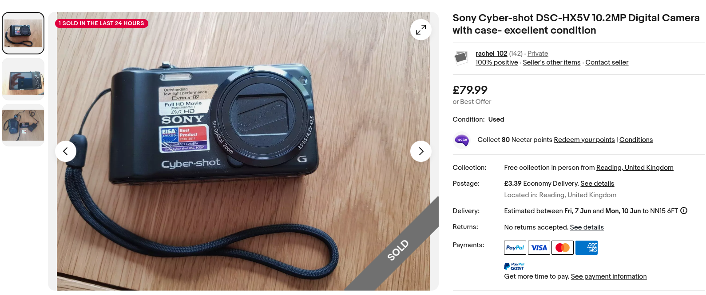
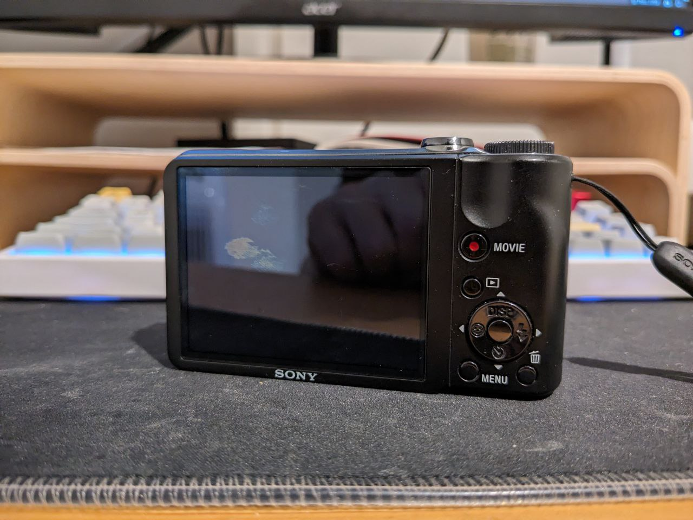

<return
:::::::::: :::::::::
:+: :+: :+:
+:+ +:+ +:+
:#::+::# +#++:++#:
+#+ +#+ +#+
#+# #+# #+#
### ### ###
::::::::: ::::::::
:+: :+: :+: :+:
+:+ +:+ +:+
+#+ +:+ :#:
+#+ +#+ +#+ +#+#
#+# #+# #+# #+#
######### ########
[05] I bought a compact digital camera
9th Jun 2024
One might argue that photography is a lost art as a result of phones making cameras
so portable, convenient, blah blah blah. One might also argue that purchasing a non-phone
camera is a waste of money, that it's a dying art form, or even that it's a hobby for those
who yearn to live a time long gone.
Jokes on these aformentioned "one"s, because I ignored their advice and bought a compact digital
camera anyway.
Making the purchase
Date of writing: 4th Jun
Initially, I was actually going to use my mum's old Sony Cyber-shot camera that she had back when
cavemen discovered fire, but when we looked in her cave it was nowhere to be found. Perhaps it was
stolen by a rival caveman, or maybe it was just lost in the sands of time. Either way, I was left with
no other option but to buy one myself (which was a difficult choice to make, considering I'm a caveman with
little to no concept of expense management).
Regardless, I scourged the net for similar cameras from the Sony Cyber-shot series of cameras, and as it turned out,
there were tons for sale on eBay from around 2010. Some were odd-looking, experimental models that were
reminiscent of the late 1990s era of mobile phones, when companies were still trying to figure out what a phone should
look like. Believe it or not, these ones were the cheapest and, while I am looking for a camera that is cheap, I'm not
picking one if it takes the same photographs that a $5 for-parts phone off Temu would.
I wanted to increase the bar somewhat, so I ranged my price from $50 to $100. I found a few that were in good condition, but
one that REALLY stood out to me was this listing for a Sony Cyber-shot DSC-HX5V.

One could call it love at first sight. I researched reviews, criticism, samples, and even the camera's manual to
see if it was really the choice I was going to make (I'm not rich like, expensive purchases are hard). At the time in 2010,
this camera was apparently the best compact digital camera you could buy! It had a revolutionary feature called "Sweep Panorama",
which was the first example of taking a panorama image by moving the camera in a sweeping motion, rather than constructing it
manually in post. It also had a 10x optical zoom, which was a big deal back then with even some DSLRs not having that much zoom.
It also had this night mode called "Handheld Twilight" takes multiple images and combines them into one to reduce noise in
low lighting conditions, which I was very excitied to try out. Apparently this camera had some of the best low-light performance
at the time, and judging by the samples I saw, it beats my phone's camera by a long shot. Maybe my iPhone friends will stop
pestering me about my inferior selfies. Just kidding, they never will. They feed off blood and eat brains.
After an hour of reviewing other reviews and specifications, I decided this one was the choice to make. I bought it (hence the
listing saying "sold" and the fact this isn't a draft post) and it was due for arrival between the 6th-8th of June (2-4 days after
writing this).
It apparently came with a battery and charger, so all I had to buy was a 32GB SDHC card and an SD card reader because I have nothing
that can read those cards. Overall on that day, I spent 90 quid.
Unboxing!
Date of writing: 7th/8th Jun
Great news! The camera is awesome! It arrived today while I was out with a friend and when I came back home at 9pm, I FINALLY
had a chance to use it.
The camera was in a small wooden box with snowflake patterns, protected with paper shreddings and stored inside a camera case
complementary from the seller. An interesting choice of packaging, but I'm not complaining. Feels like Christmas.
The camera itself is in great condition too. Looks almost brand new with zero scratches or marks, and the seller was even so kind
as to charge the battery a bit for me before sending it off.

The mark on the screen is a fingerprint because my mum thought the camera was a touchscreen. It's not. It's from 2010. Not sure if this
subverts or reinforces the whole "caveman" thing.
OK OK great, but what about the pictures?
Here's the first picture I took with the camera. It's a picture of me! Say hi to me. And I actually, obviously didn't take it either,
my mum did. Potato potato.
As I take more pictures, I'll add them to a new gallery page on fridg3.org, which you can access by clicking here or clicking on the new
"Gallery" option on the homepage. I've published some alongside the blog post, check them out! You can click on any image to view it in full resolution, and you're free to download any you like
(as long as you abide by CC BY-NC-ND). They are all 3648x2736 pixels, and you can view information about how each photograph was taken
in the metadata.
Am I happy with my purchase? Absolutely. I can't wait to take more pictures with this camera and see how they turn out. The quality
looks really good and I'm looking forward to testing the different lighting conditions. I'm also looking forward to populating
the gallery with more pictures, so stay tuned for that, if you want :)
Uh, alright the post is over. I guess. Bye.